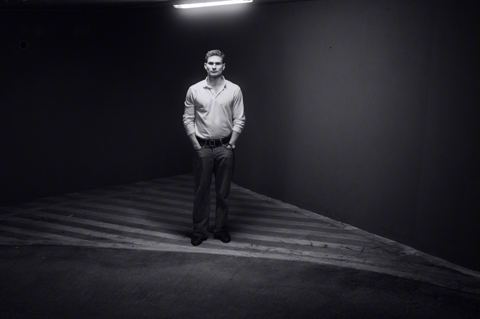

Paweł Polanowski
Aktor. Warszawa. Film, serial, reklama.
| Miasto | Warszawa, dojazd w całej Polsce |
|---|---|
| Wzrost | 183 cm |
| Wiek | 26 lat |
| Oczy | piwne |
| Włosy | ciemne, krótkie |
| Budowa | lekkoatletyczna |
| Języki | polski (ojczysty), angielski (dobry) |
| Agencja | brak, kontakt bezpośredni |
Doświadczenie
| Produkcja | Rola | Produkcja / reżyseria |
|---|---|---|
| Sløborn (serial) | Żołnierz, epizod Opiekun statystów | ZDF, reż. Christian Alvart |
| Sprawiedliwi – Wydział Kryminalny | Epizod | serial TV |
| Furioza | Statysta | film kinowy |
| Projekt | Funkcja | Uwagi |
|---|---|---|
| Politechnika Gdańska | Występ w reklamie | spot wizerunkowy |
| Reklama komercyjna | Występ bez kwestii | |
| Krótkie formy satyryczne | Aktor, współautor, montaż | 2 lata, publikacje online |
Nauka
- Warszawska Szkoła Filmowa, Studium Wokalno-Aktorskie (w trakcie)
- Improwizacja muzyczna, zajęcia w ramach studium
- Akrobatyka, zajęcia indywidualne
- Gimnazjum o profilu teatralnym
Umiejętności
- Śpiew
- Improwizacja
- Trening siłowy, sprawność fizyczna
- Praca z rekwizytem broni (scena)
- Montaż wideo, praca przy formach własnych
O mnie
Aktorstwo towarzyszy mi od szkoły z profilem teatralnym. Pierwsze doświadczenia na planie zdobyłem przy międzynarodowej produkcji Sløborn. Dziś uczę się w Warszawskiej Szkole Filmowej i szukam ról w filmie i serialu.
Zdjęcia

fot. Jakub Bartnicki © 2026 
fot. Jakub Bartnicki © 2026 
fot. Jakub Bartnicki © 2026 
fot. Jakub Bartnicki © 2026 
fot. Jakub Bartnicki © 2026 
fot. Jakub Bartnicki © 2026 
fot. Jakub Bartnicki © 2026 
fot. Jakub Bartnicki © 2026 
fot. Jakub Bartnicki © 2026 
fot. Jakub Bartnicki © 2026 
fot. Jakub Bartnicki © 2026 
fot. Jakub Bartnicki © 2026 
fot. Jakub Bartnicki © 2026 
fot. Jakub Bartnicki © 2026 
fot. Jakub Bartnicki © 2026 
fot. Jakub Bartnicki © 2026 
fot. Jakub Bartnicki © 2026 
fot. Jakub Bartnicki © 2026 
fot. Jakub Bartnicki © 2026 
fot. Jakub Bartnicki © 2026 
fot. Jakub Bartnicki © 2026 
fot. Jakub Bartnicki © 2026 
fot. Jakub Bartnicki © 2026 
fot. Jakub Bartnicki © 2026 
fot. Jakub Bartnicki © 2026 
fot. Jakub Bartnicki © 2026 
fot. Jakub Bartnicki © 2026 
fot. Jakub Bartnicki © 2026 
fot. Jakub Bartnicki © 2026
Kontakt
Castingi, zdjęcia próbne, współpraca: kontakt@polanowski.ovh
Odpowiadam zwykle w ciągu doby. Agencji jeszcze nie mam.